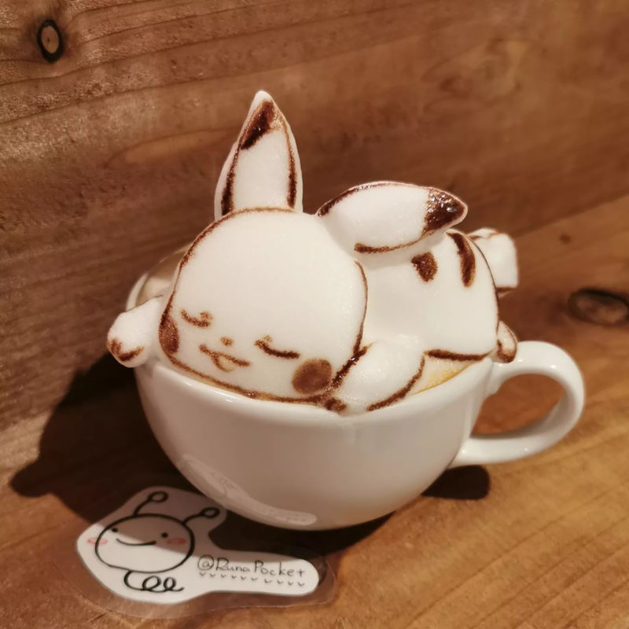

A kávé főzése
A kávéfőzés számos tényezőt tartalmaz, amelyek mindegyike fontos szerepet játszik az íz és az
élvezeti
érték kialakításában. Bár a főzési folyamat csak az egyik része a kávéfőzésnek, mégis
elengedhetetlen
fontosságú. Ha rendszeresen fogyasztunk kávét, akkor a kávéfőzőnk pontos kiválasztása
elengedhetetlen.
Az ideális kávéfőző kiválasztása számos tényezőtől függ, például a preferált kávé típusától és
stílusától, az ízlésünktől és a kényelmi igényeinktől. Ha bio minőségű kávét kedvelünk, akkor fontos
odafigyelnünk az ilyen típusú kávéfőző kiválasztására is, hogy a lehető legjobb minőségű és ízű
kávét
élvezhessük otthonunk kényelmében.
Kotyogós kávéfőzés
A kotyogós kávéfőző, vagy más néven Moka Express, az egyik legrégebbi és legnépszerűbb kávéfőző
eszközök
közé tartozik. Az olasz tervező, Alfonso Bialetti által kifejlesztett kotyogós kávéfőző már több
mint 80
éve kapható, és azóta is a házi kávéfogyasztók kedvencévé vált. A kotyogós kávéfőző kialakítása
lehetővé
teszi, hogy a kávé nagyobb mennyiségének intenzív ízvilága és aromája jelenjen meg, így az igazi
kávérajongók igényeit is kielégíti. Az elkészítése egyszerű: a kotyogós alsó részébe vizet töltünk,
a
felső tartályba pedig frissen őrölt kávét helyezünk. A kotyogó forróságának hatására a víz átfolyik
a
kávén, majd a felső tartályban gyűlik össze a friss, aromás és intenzív ízű kávé. A kotyogós
kávéfőző
kiváló választás a tradicionális kávék szerelmeseinek, akik az otthoni kávéfőzés egyszerűségét és a
klasszikus kávéfőzés élményét keresik.
Filteres kávéfőzés
A filteres kávéfőző nagy előnye, hogy könnyen használható és nagy mennyiségű kávét lehet vele
készíteni
egyszerre. A filteres kávéfőzőben a víz átfolyik a kávéőrleményen, majd lecsepegteti az elkészült
kávét
egy üveg vagy műanyag kancsóba. Az elkészült kávé íze és aromája a filter típusától és az őrlemény
finomságától is függ, így lehetővé teszi a személyre szabott kávéfogyasztást. A filteres kávéfőzővel
készített kávé többnyire lágyabb, gyümölcsösebb és kevésbé erős ízű, mint a kotyogós vagy a
presszókávé.
A filteres kávéfőzők gyakran átlátszó üvegtartállyal rendelkeznek, így láthatjuk, hogy a kávé
elkészült
és mikor van szükség a tisztításra. A filteres kávéfőző nagyszerű választás azok számára, akik
szeretik
a finomabb, lágyabb ízű kávét és könnyen és egyszerűen szeretnének kávét főzni otthon.
Dugattyús kávéfőző (French Press)
A dugattyús kávéfőző, más néven French Press, egy nagyon egyszerű, de hatékony módszer a
kávéfőzéshez. A
dugattyús kávéfőzőben a forró víz és a kávéőrlemény közvetlenül érintkezik egymással, és a dugattyú
segítségével az elkészült kávét azonnal tálalhatjuk. Az elkészült kávé intenzív és teljes ízvilággal
rendelkezik, mivel a kávéőrleményt hosszabb ideig áztatjuk, mint más kávéfőző eszközök esetében. A
dugattyús kávéfőzővel készült kávé sűrűbb és testesebb, mint a filteres kávéfőzővel készült kávé, és
egyedi ízvilágával kiválóan kiegészíthetők a különböző tejszín, cukor és fűszerek. A dugattyús
kávéfőző
nagyon könnyen használható, és többféle méretben és stílusban kapható, így ideális választás lehet
azok
számára, akik szeretik a gazdag és testes ízű kávét, és egyszerűen és gyorsan szeretnék elkészíteni
azt
otthon.
Kapszulás kávéfőző
A kapszulás kávéfőzőkkel készített kávé általában közepesen erős és gazdag ízű, és számos kapszula és
ízválaszték áll rendelkezésre a különböző ízléseknek megfelelően. A kapszulás kávéfőzők nagyszerű
választás azok számára, akik kényelmet és sokoldalúságot szeretnének a kávéfogyasztásban, és
szeretnék
élvezni a frissesség és a különleges ízek előnyeit otthonuk kényelmében.
Hideg kávéfőzés

A hidegkávéfőzés egy egyedülálló módszer a kávé elkészítésére, amelyben a forró víz helyett hideg
vizet
használunk, és hosszú ideig áztatjuk a kávét. A hidegkávéfőzés eredménye egy nagyon sima és lágy ízű
kávé, amelynek alacsony a savtartalma és a keserűsége, és kevesebb koffeint tartalmaz, mint a
hagyományos forró kávé. A hidegkávéfőzés során a kávéőrleményt és a hideg vizet legalább 12-24 órán
át
áztatjuk a hűtőben vagy szobahőmérsékleten, majd átszűrjük a kávéfőzőn, hogy eltávolítsuk az
őrleményt.
A hidegkávéfőzés lehetővé teszi a kávé ízének és aromáinak finomabb kiemelését, és kiválóan alkalmas
arra, hogy a kávé élvezeti értékét élvezze, anélkül, hogy túl sok koffeint vagy savat fogyasztana. A
hidegkávéfőzéshez számos kávéfőző eszköz és recept áll rendelkezésre, és a végeredmény mindig
egyedülálló és különleges.
Ha érdekli még a téma, itt olvashat róla többet!